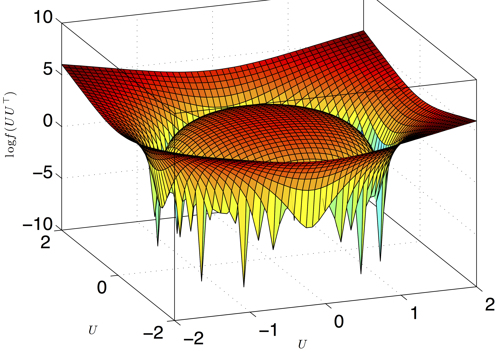
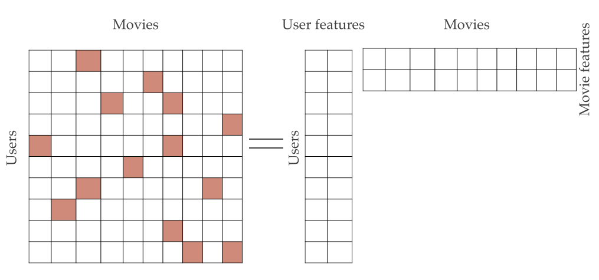

|
Research Projects
Exploring Generalization in Deep Learning
Learning with deep neural networks has been very successful recently in a wide variety of tasks. Even though the training loss is a complex non-convex objective, simple methods such as stochastic gradient descent (SGD) are able to find a global minima. More surprisingly, the solutions found by SGD have small test error, even though the problem is generally over-parametrized (model has more parameters than the number of samples). This is a result of the implicit regularization of the optimization algorithm (SGD), that results in picking a global minima with a smaller test error. To understand this generalization behavior and its relation to the optimization methods, we study the following two questions.
1) What is the right complexity measure, minimizing which will result in better generalization behavior in learning deep networks?
To understand this question we empirically evaluate different norm, margin and sharpness based measures of neural networks and study their ability in explaining the generalization behavior observed in practice. We also theoretically investigate and provide margin and sharpness based generalization error guarantees for neural networks.
2) What is the implicit regularization introduced by the optimization algorithms?
To understand this, we study this question for the case of over-parametrized matrix factorization. Given linear measurements of a matrix, we solve the matrix regression problem by explicitly factorizing the matrix and doing gradient descent on the factors. We set the hidden dimension of the factors big enough to be in the over-parametrized regime. In this regime, even though there are multiple global minima that fit the measurements, we empirically observe that doing gradient descent on the factors, with initialization close to 0, recovers the minimum nuclear norm solution. We also prove that implicit regularization of the gradient descent is indeed the nuclear norm for certain classes of measurements, for matrix factorization.
Towards Understanding the Role of Over-Parametrization in Generalization of Neural Networks, Behnam Neyshabur, Zhiyuan Li, Srinadh Bhojanapalli, Yann LeCun, Nathan Srebro, 2018.
A PAC-Bayesian Approach to Spectrally-Normalized Margin Bounds for Neural Networks, Behnam Neyshabur, Srinadh Bhojanapalli, David McAllester, Nathan Srebro, ICLR 2018.
Exploring Generalization in Deep Learning, Behnam Neyshabur, Srinadh Bhojanapalli, David McAllester, Nathan Srebro, NIPS 2017.
Implicit Regularization in Matrix Factorization, Suriya Gunasekar, Blake Woodworth, Srinadh Bhojanapalli, Behnam Neyshabur, Nathan Srebro, NIPS 2017.
Dropping Convexity for Faster Low-Rank Optimization
|
 |
Low rank matrix factorization is an important step in algorithms for many high dimensional machine learning problems such as recommendation systems and multi-task learning. Convex methods that relax the rank constraint have been well studied and are popular for their nice statistical properties. However they have high computational and memory complexity, as the methods require solving a semi-definite program. This prohibits such methods from being used in practice on large scale problems.
Our approach is to embrace the non-convexity of factorization and use it to design low complexity algorithms with strong guarantees matching that of convex methods. In particular we study behavior of gradient descent on the factors and characterize the conditions under which such simple local search methods recover the global minima. We give a theoretical characterization of the optimization landscape around the global minima and provide convergence guarantees for gradient descent with rates. We also provide smart initialization strategies that speedup the convergence of local search algorithms.
Such factorization based local search methods, in contrast to the methods that require eigenvalue decomposition in each iteration, have smaller memory complexity and are easily parallelizable making them well suited for distributed implementations dealing with large scale data. Building on these factorization techniques, we design algorithms for large scale Principal Component Analysis (PCA) with implementations in SPARK, a distributed machine learning framework.
|
Smoothed analysis for low-rank solutions to semidefinite programs in quadratic penalty form, Srinadh Bhojanapalli, Nicolas Boumal, Prateek Jain, Praneeth Netrapalli, COLT 2018.
Global Optimality of Local Search for Low Rank Matrix Recovery, Srinadh Bhojanapalli, Behnam Neyshabur, Nathan Srebro, NIPS 2016.
Dropping Convexity for Faster Semi-definite Optimization, Srinadh Bhojanapalli, Anastasios Kyrillidis, Sujay Sanghavi, COLT 2016.
Tighter Low-rank Approximation via Sampling the Leveraged Element, Srinadh Bhojanapalli, Prateek Jain, Sujay Sanghavi, SODA 2015.
Single Pass PCA of Matrix Products, Shanshan Wu, Srinadh Bhojanapalli, Sujay Sanghavi, Alex Dimakis, NIPS 2016.
Provable Burer-Monteiro factorization for a class of norm-constrained matrix problems, Dohyung Park, Anastasios Kyrillidis, Srinadh Bhojanapalli, Constantine Caramanis, Sujay Sanghavi.
Matrix Completion
|
 |
Matrix completion is the problem of finding the smallest rank matrix that fits the observed entries. This problem has applications in recommendation systems, where it is used to generate new recommendations for the users from the past ratings of items from all the users. I have worked on understanding the relation between the distribution of the observed entries and the underlying rating matrix, that allows convex methods such as nuclear norm minimization to find the solution of the rank minimization problem with nearly optimal sample complexity.
|
|